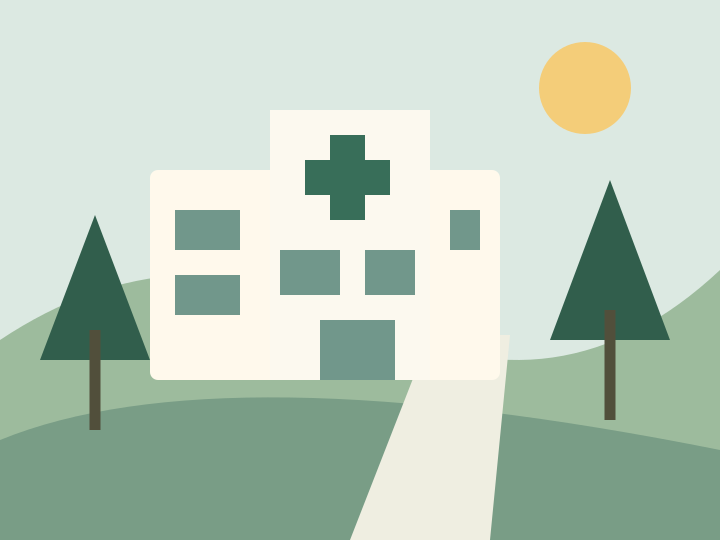
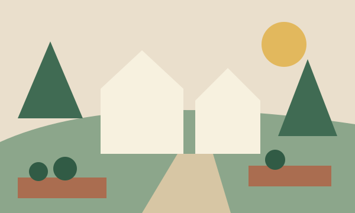

Primary care
Explore clinic and appointment options for everyday care.
Explore primary care →HERE IN ALDERBROOK
Explore a local hospital, neighborhood clinics and the people in our fictional care community.
Find a provider Find a location →
Explore clinic and appointment options for everyday care.
Explore primary care →Browse the fictional service directory.
Explore hospital services →Find arrival, visiting and billing resources.
Explore your visit →
COMMUNITY NOTEBOOK · FICTIONAL
A sample story about shared spaces, neighborhood walks and the people who make a town feel like home. This is illustrative editorial content.
Explore visitor resources →